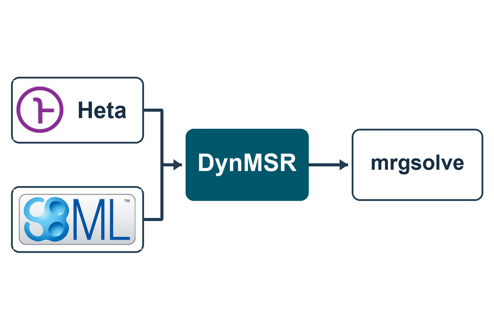

Evgeny Metelkin
2026-11-03

Happy to announce that DynMSR is now available on CRAN. The R package connects systems biology and systems pharmacology models to simulation workflows in R.
DynMSR supports Heta and SBML models and can prepare them for simulation with mrgsolve.
DynMSR is part of the Heta project, which develops tools for building and working with reusable models.
Install DynMSR from CRAN:
install.packages("DynMSR")Find guides and examples on GitHub.
License: CC-BY-4.0